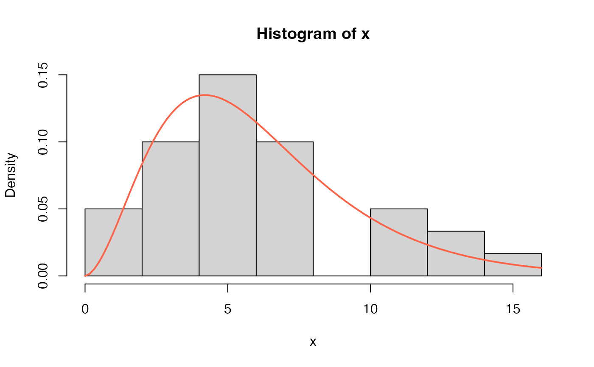
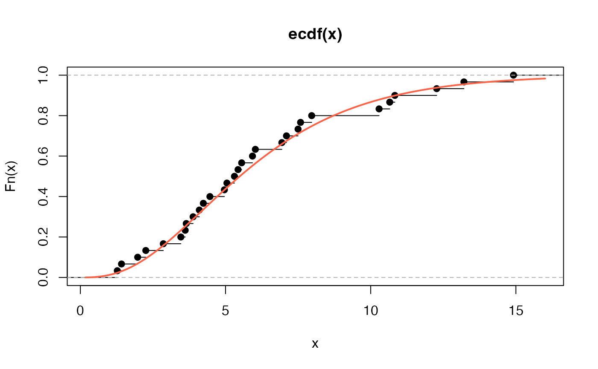
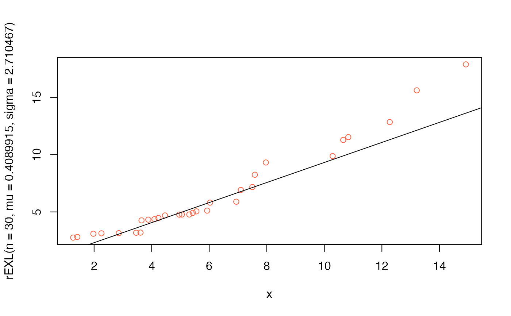

The function EXL() defines The exponentiated XLindley,
a two parameter distribution, for a gamlss.family object
to be used in GAMLSS fitting
using the function gamlss().
Value
Returns a gamlss.family object which can be used to fit a
EXL distribution in the gamlss() function.
Details
The exponentiated XLindley with parameters mu and sigma
has density given by
$$f(x) = \frac{\sigma\mu^2(2+\mu + x)\exp(-\mu x)}{(1+\mu)^2}\left[1- \left(1+\frac{\mu x}{(1 + \mu)^2}\right) \exp(-\mu x)\right] ^ {\sigma-1} $$ for \(x \geq 0\), \(\mu \geq 0\) and \(\sigma \geq 0\).
Note: In this implementation we changed the original parameters \(\delta\) for \(\mu\) and \(\alpha\) for \(\sigma\) we did it to implement this distribution within gamlss framework.
References
Alomair, A. M., Ahmed, M., Tariq, S., Ahsan-ul-Haq, M., & Talib, J. (2024). An exponentiated XLindley distribution with properties, inference and applications. Heliyon, 10(3).
Author
Manuel Gutierrez Tangarife, mgutierrezta@unal.edu.co
Examples
# Example 1
# Generating some random values with
# known mu and sigma
y <- rEXL(n=300, mu=0.75, sigma=1.3)
# Fitting the model
require(gamlss)
mod1 <- gamlss(y~1, sigma.fo=~1, family=EXL,
control=gamlss.control(n.cyc=5000, trace=FALSE))
# Extracting the fitted values for mu and sigma
# using the inverse link function
exp(coef(mod1, what="mu"))
#> (Intercept)
#> 0.7396678
exp(coef(mod1, what="sigma"))
#> (Intercept)
#> 1.254606
# Example 2
# Generating random values for a regression model
# A function to simulate a data set with Y ~ EXL
gendat <- function(n) {
x1 <- runif(n)
x2 <- runif(n)
mu <- exp(1.45 - 3 * x1)
sigma <- exp(2 - 1.5 * x2)
y <- rEXL(n=n, mu=mu, sigma=sigma)
data.frame(y=y, x1=x1, x2)
}
set.seed(1234)
dat <- gendat(n=100)
mod2 <- gamlss(y~x1, sigma.fo=~x2,
family=EXL, data=dat,
control=gamlss.control(n.cyc=5000, trace=FALSE))
summary(mod2)
#> Warning: summary: vcov has failed, option qr is used instead
#> ******************************************************************
#> Family: c("EXL", "Exponentiated XLindley")
#>
#> Call:
#> gamlss(formula = y ~ x1, sigma.formula = ~x2, family = EXL, data = dat,
#> control = gamlss.control(n.cyc = 5000, trace = FALSE))
#>
#> Fitting method: RS()
#>
#> ------------------------------------------------------------------
#> Mu link function: log
#> Mu Coefficients:
#> Estimate Std. Error t value Pr(>|t|)
#> (Intercept) 1.68780 0.09469 17.82 <2e-16 ***
#> x1 -3.27523 0.18328 -17.87 <2e-16 ***
#> ---
#> Signif. codes: 0 '***' 0.001 '**' 0.01 '*' 0.05 '.' 0.1 ' ' 1
#>
#> ------------------------------------------------------------------
#> Sigma link function: log
#> Sigma Coefficients:
#> Estimate Std. Error t value Pr(>|t|)
#> (Intercept) 2.3398 0.1808 12.939 < 2e-16 ***
#> x2 -1.6885 0.2583 -6.537 2.85e-09 ***
#> ---
#> Signif. codes: 0 '***' 0.001 '**' 0.01 '*' 0.05 '.' 0.1 ' ' 1
#>
#> ------------------------------------------------------------------
#> No. of observations in the fit: 100
#> Degrees of Freedom for the fit: 4
#> Residual Deg. of Freedom: 96
#> at cycle: 18
#>
#> Global Deviance: 262.9851
#> AIC: 270.9851
#> SBC: 281.4058
#> ******************************************************************
# Example 3
# Mortality rate due to COVID-19 for 30 days (31st March to April 30, 2020)
# recorded for the Netherlands.
# Taken from Alomair et al. (2024) page 12.
x <- c(14.918, 10.656, 12.274, 10.289, 10.832, 7.099, 5.928, 13.211,
7.968, 7.584, 5.555, 6.027, 4.097, 3.611, 4.960, 7.498, 6.940,
5.307, 5.048, 2.857, 2.254, 5.431, 4.462, 3.883,
3.461, 3.647, 1.974, 1.273, 1.416, 4.235)
mod3 <- gamlss(x~1, sigma.fo=~1, family=EXL,
control=gamlss.control(n.cyc=5000, trace=FALSE))
# Extracting the fitted values for mu and sigma
# using the inverse link function
exp(coef(mod3, what="mu"))
#> (Intercept)
#> 0.4089915
exp(coef(mod3, what="sigma"))
#> (Intercept)
#> 2.710467
# Replicating figure 4 from Alomair et al. (2024)
# Hist and estimated pdf
hist(x, freq=FALSE)
curve(dEXL(x, mu=0.4089915, sigma=2.710467), add=TRUE, col="tomato", lwd=2)

# Empirical cdf and estimated ecdf
plot(ecdf(x))
curve(pEXL(x, mu=0.4089915, sigma=2.710467), add=TRUE, col="tomato", lwd=2)

# QQplot
qqplot(x, rEXL(n=30, mu=0.4089915, sigma=2.710467), col="tomato")
qqline(x, distribution=function(p) qEXL(p, mu=0.4089915, sigma=2.710467))

# Example 4
# Precipitation in inches
# Taken from Alomair et al. (2024) page 13.
# Manuel